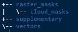

Install and load the package
You only need to install the package once (unless you are updating it). The package lives on GitHub so you will need devtools to install.
# Install and load groveR
# install.packages("devtools")
devtools::install_github("dbca-wa/groveR")
library(groveR)Once this is done you need to set up a standard processing environment.
Why?
The functions in this package are going to require access to various data and will produce raster and csv products. If everything is located in a standard structure your analysis will run smoother and you won’t be inclined to lose anything.
How?
You will firstly create a top level directory (Processing Folder) where all interim products and final outputs will be generated. This can be wherever and named whatever is convenient. As previously suggested, if set up as an RStudio Project, this will already be your working directory. If not this is where you should set it to. Following this you can populate it with sub-directories that will house user data inputs. If you run the code below it will create those for you.
# Make the sub-directories in the processing folder
make_folders(p =".")What does it look like?
The sub-directories have the following structure:

raster_masks/will contain “general” raster masks of the type that will be applied to all satellite data.raster_masks/cloud_masks/will contain “specific” raster masks that will be applied only to certain satellite data dates.supplementary/will contain three csv files. One each to describe calibration coefficients, density classes and trend classes.vectors/will contain a shape file that delineates the region that output area stats are generated for.
What’s next?
The starting point for this workflow is a directory containing pre-generated annual vegetation index rasters that cover an area to be reported on. These index rasters, one per year, will have been chosen on the basis of:
- An appropriate index, when used in a model, provide the best measure of cover.
- That the time of capture is the same for all time steps i.e. the same season.
- That they are free from cloud, or where cloud is unavoidable, they have had cloud masked and the appropriate mask has been retained.
- That they cover the whole area of interest. If the area of interest is larger than an available satellite scene, they have been mosiacked together.
- That they all have identical extents (footprints) and pixel sizes.
The above data will be large and as such should not be located in the Processing Folder. You will however need to know where it is and be able to provide a filepath to it’s location.
The other data that you will need to provide will be stored in the appropriate sub-directories of the described Processing Folder. Ensure any masks have the same extents and pixel sizes as the annual rasters. The required csv files will be described in detail later in the vignettes as will the shape file.
A Note on Projections
Any data that is used for your analysis must have a consistent projection. As reporting areas used in mangrove monitoring can straddle more than one UTM zone, Albers Australia (EPSG: 3577) has been used as a default. This is a reasonable choice as it enables easy calculation for area in metres and UTM zones are not an issue.